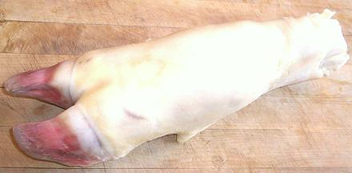

Calf Foot

[Pate de Res (Spanish)]
An essential ingredient in many traditional soups, including
Philadelphia Pepperpot - the soup that saved the American Revolution.
These have fallen out of use by Regular Americans as so many wish to
avoid any animal part that actually looks like part of an animal.
They are easily available in ethnic markets.
More on Cuts of Beef
Buying:
Here in California Calif Feet are found in markets
serving Mexican, Eastern and Southeastern European, Turkish, Armenian,
South American, Levantine and Middle Eastern communities, and we have
plenty of all those. If the feet are whole, have the butcher bandsaw them
into slices - this service is normal and generally provided without cost.
Prep:
Feet sold in California are thoroughly cleaned with
the outer hoof and all hair removed. If you buy pre-cut feet or have the
meat market bandsaw them into convenient pieces there is no prep except
a quick wash to remove any saw kerf residue. If you have purchased them
whole, use a meat cleaver driven by a heavy soft faced mallet to split
them lengthwise first and then crosswise.
Cooking:
When making soup stock you'll want to simmer for
at least 8 hours, more is better. For
Khash (Armenia, Georgia, Azerbaijan) 10 to 12 hours.
ab_feetz 101010 - www.clovegarden.com
©Andrew Grygus - agryg@clovegarden.com - Photos
on this page not otherwise credited © cg1
- Linking to and non-commercial use of this page permitted